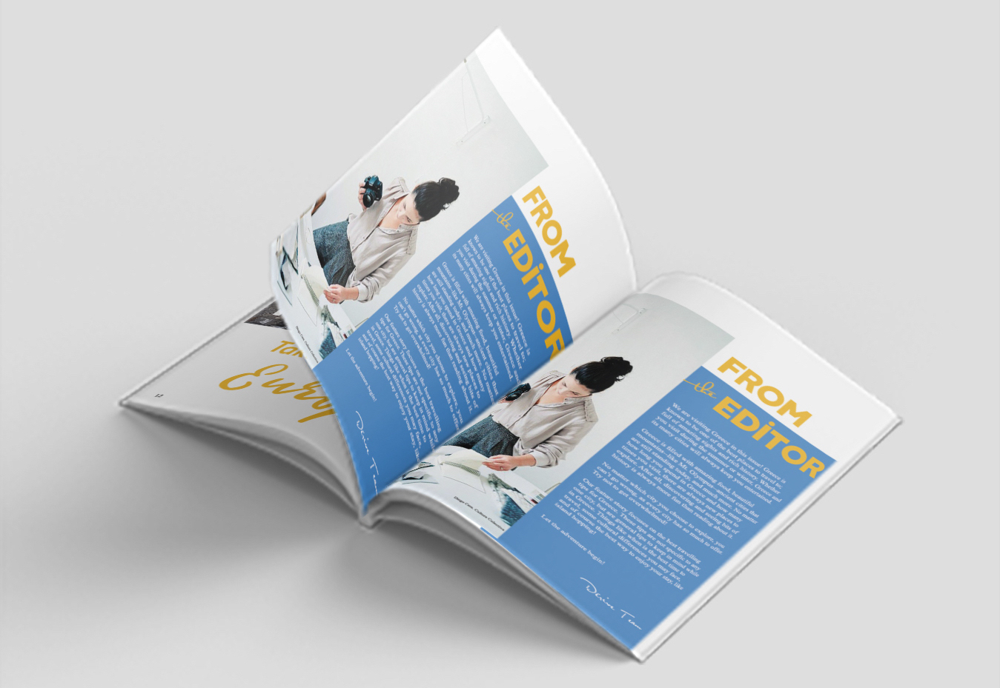

Assignment: Open House card and an Awards Card showcasing design creativity
and demonstrating skill in variable data printing and different printing finishes
For the awards card I decided to go classic and use flowers as the main design. The
flowers would get an embossed finish and the "Ryerson" logo would get some gold foil,
all printed with Konika Minolta. With the Open House card I experimented with getting
a silk type design in Photoshop to get an iridescent type look. Both cards used variable
data printing (VDP) to personalize each card for each recipient in the inside of the card.
The projects took about 2 weeks each to complete from beginning until final print.

Assignment: Create a magazine from concept to print and digital publication in groups of 4
As a group we decided to make travel magazine with a Greek travel issue.
My task was to create a double-spread ad. I chose to have an ad about an airline
advertising about discounted rates for select European countries. I chose beautiful
pictures from each country, which I chose somewhat at random, to take full advantage
of the amount of space I had. I decided to cut off the bottom from images because it was
getting too crowded with no room for text. I chose yellow for the main text and call-to-action
because it harmonized well with each image. For the digital version I made the call-to-action
a clickable link. My other task was to design and write the "From the Editor" page. I looked at
many magazines and most had about a paragraph about the issue, why it each topic was chosen, and what
to expect going into the issue. I wrote exactly this our issue as well. For the design I decided to
add an image and separate the image from the wall of text to make the text less intimidating to read
and keep the page looking pleasing and clean. Once all design and copy was done, we learned the process
of publishing a magazine digitally and sending it to print. Each of us got to keep a copy of our magazine.
Assignment: Redesign a book cover and print and attach it to the book.
Assignment #2 was to create an ad poster for the Student Learning Centre(SLC) in a group of 4 in black, white,
and 1 custom colour to be printed on a press.
I chose a poetry book called Memories by Lang Leav. I decided to go with a polaroid type design
for the cover since physical permanent pictures are what I think of when I think "memories".
I chose to photograph roses in 3 stages of life to represent the passage of time and the making of memories.
I wanted the design to be limited in elements and colour but not dull so I chose the colours of the rose as
the main colours. I believed a simple design with bold colours would catch the eye and make a reader curious
to see the contents of the book.
For assignment #2, my group and I designed the poster together. We decided on geometric shapes to match how
the SLC building looks. We decided on a simple design with iconography to keep it visually interesting.
The geometric shapes also provided a clear space for all the information we needed to add. Once the design
was done and we had our custom blue colour, we found the "recipe" in a pantone book and mixed the ink ourselves.
We performed the pre-press tasks to get our project print-ready. We then used the Heidelberg Printmaster and our
custom printing plates to print our poster, checking each run and adjusting the machine when needed.